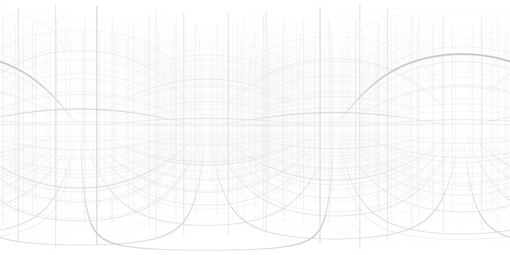

<style>
body { background:#f0e0e0; overflow:hidden;}
</style>

<script src="https://aframe.io/releases/0.7.0/aframe.min.js"></script>
<script src="https://cdnjs.cloudflare.com/ajax/libs/webpack-cesium/1.37.0/webpack.cesium.js"></script>
<script src="https://rawgit.com/feiss/aframe-environment-component/master/dist/aframe-environment-component.min.js"></script>
<script src="GLTFLoader.js"></script>
<script src="aframe_terrain.js"></script>

<a-scene>

<a-assets>

<a-asset-item id="tree-obj" src="tree.obj"></a-asset-item>
<a-asset-item id="tree-mtl" src="tree.mtl"></a-asset-item>
</a-assets>

<!-- <a-entity environment="preset:forest"></a-entity> -->
<a-sky src="#sky"></a-sky>

<a-entity id='cameraWrapper' position="0 0 0">
<a-camera id="camera"></a-camera>
</a-entity>

<a-entity a-terrain></a-entity>

<!-- where am i? -->
<a-box position="0 0 0"  color="#000000"></a-box>
<a-box position="10 0 0" color="#ff0000"></a-box>
<a-box position="0 10 0" color="#00ff00"></a-box>
<a-box position="0 0 -10" color="#0000ff"></a-box>

</a-scene>
